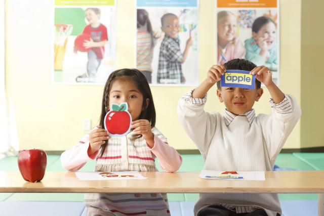

Published On: Saturday, July 14th 2023
In the rapidly growing era of globalization, the ability to speak English has become an inevitable necessity, especially in the world of education. English not only serves as a means of communication, but also a bridge that connects various fields of knowledge and career opportunities. Based on data from the EF English Proficiency Index, Indonesia is still at an intermediate level in terms of mastering English in order to compete in the global arena
It is undeniable that English has become an international language spoken in over 100 countries. As the most widely used language in academic literature, research, and scientific publications, mastery of English is an important factor for students. It not only helps in understanding lecture materials, but also opens up opportunities to participate in international seminars, student exchanges, and academic competitions.
Mastering English has various benefits, especially in the world of education. Firstly, by mastering English, students can access more literature and academic resources that are mostly available in English. This enriches their knowledge and broadens their horizons. Secondly, English is also key to getting scholarships and continuing studies abroad. Many leading universities require English proficiency as one of the main admission requirements.
The use of technology in English learning is also very important in this digital era, by utilizing online learning applications and platforms, students can learn English independently with more flexibility.
English is no longer just a subject in school, but an important provision that will open up many opportunities in the future. Mastery of English not only improves academic ability, but also equips students with relevant skills in the world of work. Therefore, it is time we take English learning seriously as one of the prx iorities in education.
To overcome these challenges, a strong collaboration between the government, schools, and parents is essential. The government must invest in teacher training programs to enhance the quality of English instruction. Schools should provide students with better access to digital learning resources and create an environment that encourages active English usage. Parents, on the other hand, play a vital role in supporting and motivating their children to practice English outside the classroom, whether through conversations, media exposure, or extracurricular activities.
In today’s digital age, the integration of technology in English language learning is more important than ever. Online platforms, educational apps, and virtual classrooms provide students with the opportunity to learn independently and at their own pace. With just a smartphone or computer, students can access English learning content such as videos, interactive quizzes, and podcasts anytime and anywhere. This flexibility makes it easier for learners to stay consistent and motivated in their language learning journey.
Therefore, it is time for us to take English education more seriously and prioritize it within the national education system. Let us support all efforts aimed at improving English proficiency among Indonesian students so they can become more confident, competitive, and capable of facing global challenges. With English as their asset, the young generation of Indonesia will be better prepared to shape a brighter, more globally connected future.